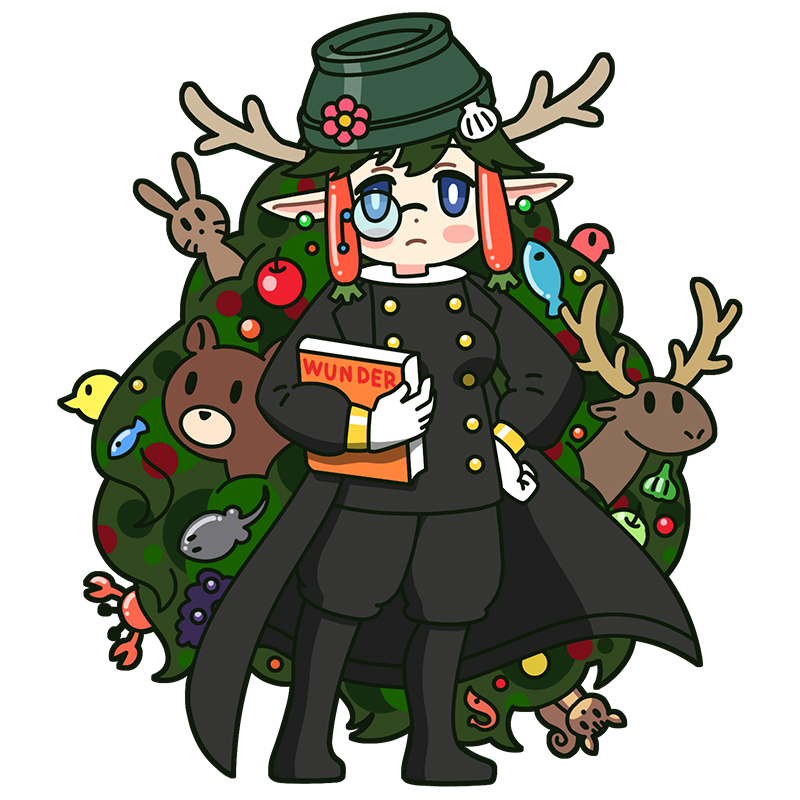

People call them
mere assemblages,
but…to me,
they are deeply precious.
Arcimboldo
The fantastical muse who served
an emperor obsessed with curiosities.
A Mannerist muse who served powerful rulers. She is a knowledgeable librarian in the library where the muses gather, though many consider her quite eccentric. Various creatures of nature are said to live in her thick, forest-like hair.
Style
Hometown
Italy
Classics
- "Rudolph painted as Vertumnus"
- "The Four Seasons"
- "The Librarian" etc.
This is the Arcimboldo piece!
Rudolph painted as Vertumnus
A bizarre portrait of Rudolf II, Holy Roman Emperor and Arcimboldo’s patron, assembled from vegetables and flowers. Vertumnus was the Roman god of abundance and is thought to symbolize the emperor’s rule by combining his image with that of a nature deity. While many of Arcimboldo’s portraits show their subjects in profile, this one faces forward, befitting a powerful ruler.
Year
Around 1590
Medium
Oil on panel
Dimension
68 cm x 56 cm
Collection
Skokloster Castle
（Sweden)
Who is Arcimboldo?
Giuseppe Arcimboldo
An Italian painter who served as a court artist to the Holy Roman Emperors. He is best known for bizarre portraits that combine vegetables, fruits, and animals to form human faces. Though largely forgotten after his death, he was later rediscovered and influenced artists who explored fantastical imagery, including Salvador Dalí. His talents went beyond eccentric paintings: he also designed palace interiors and costumes for court festivals.
Full Name
Giuseppe Arcimboldo
Born
April 5, 1526
Died
July 11, 1593(aged 67)